Hyponatraemia: the debrief for week 6, He fitted on the ward
Sunday 15:40 · bed 14
He fitted on day three of a pneumonia. The answer was on a blood gas.
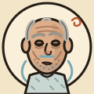
- Dennis Rowley, 71, a heavy drinker, on day three in hospital with a right-sided pneumonia.
- A two-minute seizure. Then snoring and hard to rouse: Glasgow Coma Scale (GCS) 8.
- His nurse had put that afternoon’s muddle down to alcohol withdrawal.
- The blood gas: sodium 112 mmol/L.
- This debrief is about low sodium: why the brain minds, how to find the cause, and how to raise it safely.
112 mmol/L
Hyponatraemia is a water problem: too much water for the sodium in the body.
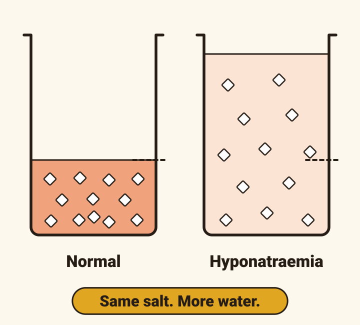
- A serum sodium below 135 mmol/L.
- It is the commonest electrolyte disorder, found in 15 to 20% of emergency admissions to hospital.
- It goes with more deaths and longer stays. Whether the sodium or the illness behind it is to blame is not known.
112 · since Thursday · a seizure
Three questions sort every low sodium: how low, how long, how symptomatic.
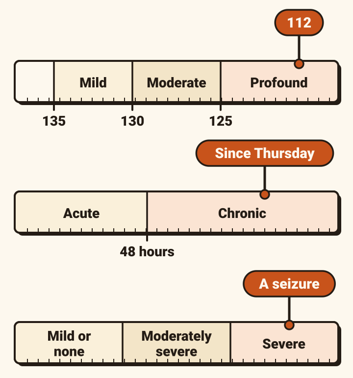
- How low? Mild 130 to 135, moderate 125 to 129, profound below 125.
- How long? Acute: under 48 hours. Chronic: 48 hours or more, or unknown.
- How symptomatic? Moderately severe: nausea without vomiting, confusion, headache. Severe: persistent vomiting, seizures, coma (GCS 8 or less), cardiorespiratory arrest.
- Profound is a number. Severe is a symptom. They can disagree, and treatment follows the symptoms.
- Dennis: profound, chronic, severe.
Sunday lunchtime · headache, nausea, muddled
The brain swells when the sodium falls. Given two days it adapts, and that sets a trap.
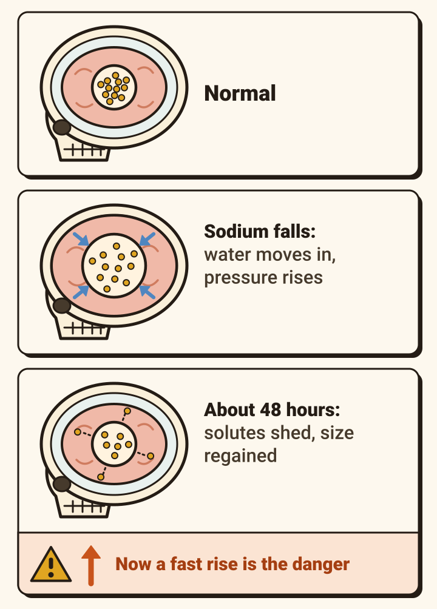
- Water moves from dilute blood into brain cells. The brain swells and the pressure in the skull rises: headache, vomiting, drowsiness, seizures, coma.
- Dennis had the headache, the nausea and the muddle from lunchtime, hours before the fit.
- Over about 48 hours brain cells shed solutes and regain their size. That is why 48 hours divides acute from chronic.
- The adapted brain is the one a fast rise harms: osmotic demyelination (card 14).
- His sodium was already 129 on Thursday. His brain had adapted.
CIWA 6, 5, 4
On a ward, a low sodium hides behind the label the patient already wears.
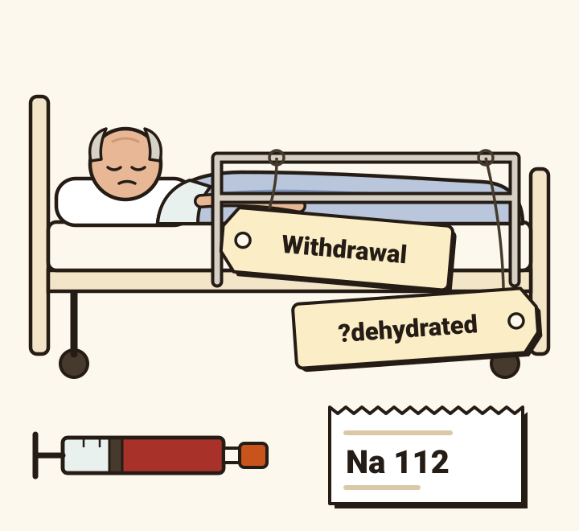
- The symptoms are non-specific.
- “It’s the withdrawal.” About 80 hours since his last drink. His withdrawal score (CIWA) had fallen all day: 6, 5, 4. No tremor.
- “He’s dehydrated.” In his notes since admission. Yet his mouth was moist, he had no postural drop, and he was 1.1 kg heavier than on Thursday.
- A blood gas machine reads the sodium directly, in minutes.
Urine osmolality 486
One hormone decides how much water the kidney keeps.
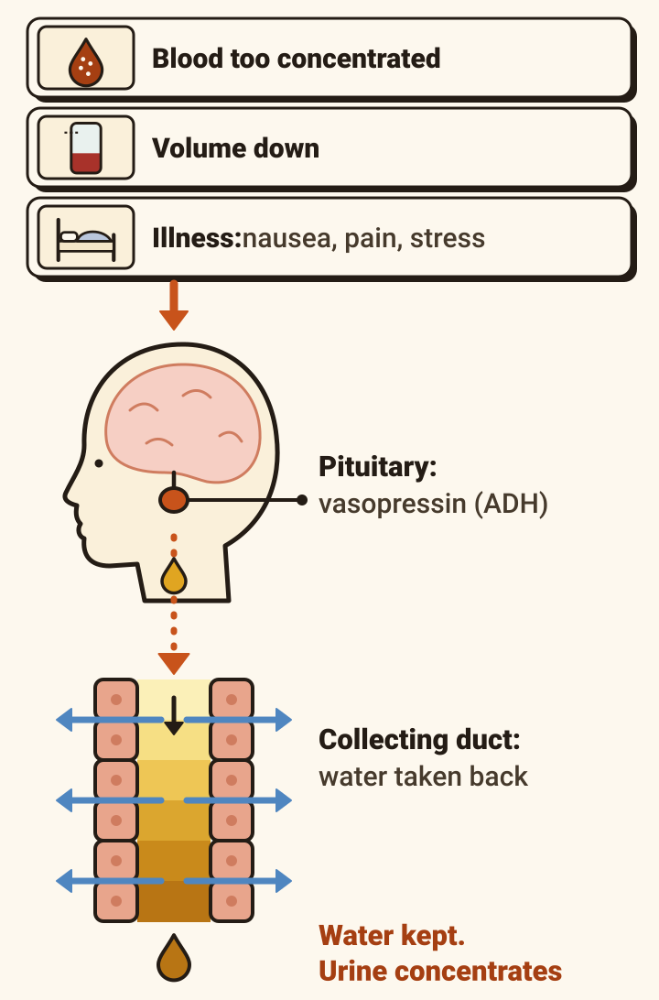
- Vasopressin, or antidiuretic hormone (ADH), comes from the pituitary. In the kidney’s collecting duct it makes the kidney take water back, and the urine concentrates.
- Two things release it: blood that is too concentrated, and a fall in circulating volume. The body defends volume first.
- Illness releases it too: nausea, pain, stress, drugs.
- The urine osmolality reads it out. At 100 mOsm/kg or below, vasopressin is off. Dennis’s was 486: on.
Serum osmolality 238 · urine sodium 58
Three laboratory results sort the causes before you lay a hand on the patient.
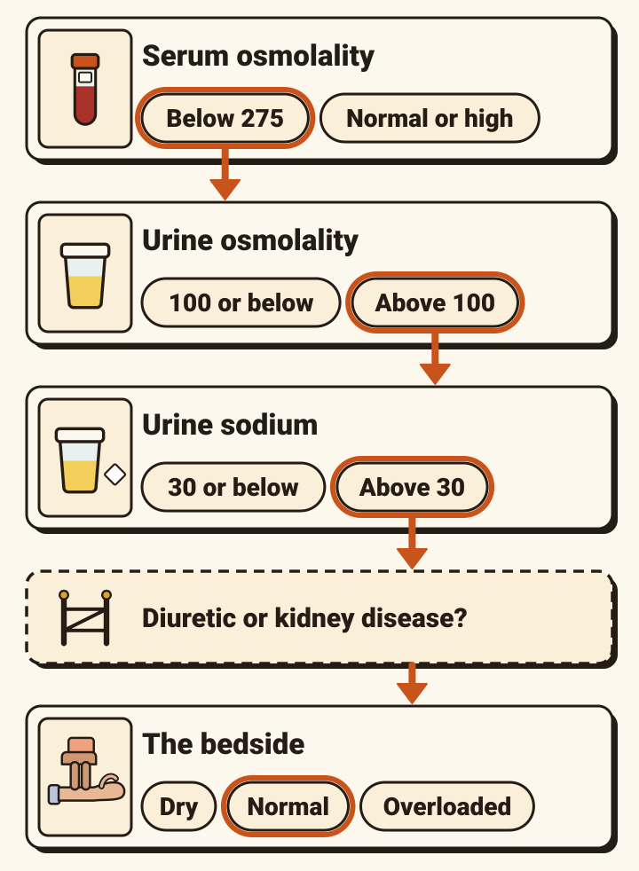
Tap each step.
- The bedside comes last because it is unreliable: its sensitivity and specificity are low.
- Local flowcharts differ. NHS Greater Glasgow and Clyde’s sorts by volume at the bedside before the urine sodium, and cuts the urine sodium at 20. Use your trust’s.
The decision: which box is he in?
Every cause of true hyponatraemia sits in one of six boxes.
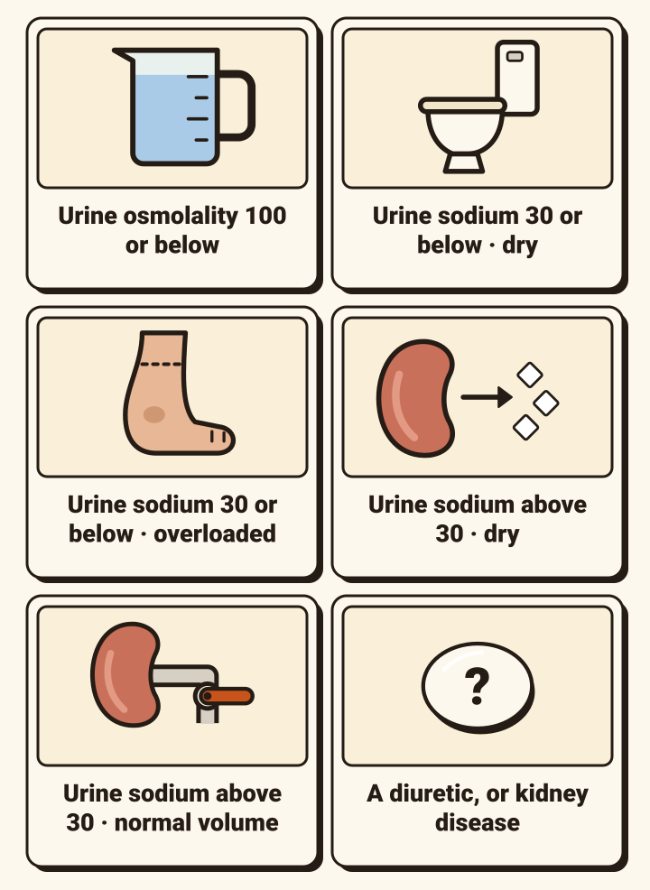
Tap a box.
- Among drugs, think first of thiazides.
- Dennis lives on “beer and the odd sandwich”, so the first box deserved a thought. A urine osmolality of 486 closed it.
TSH 1.9 · cortisol 612
SIADH is a diagnosis of exclusion: six conditions, and you need all six.
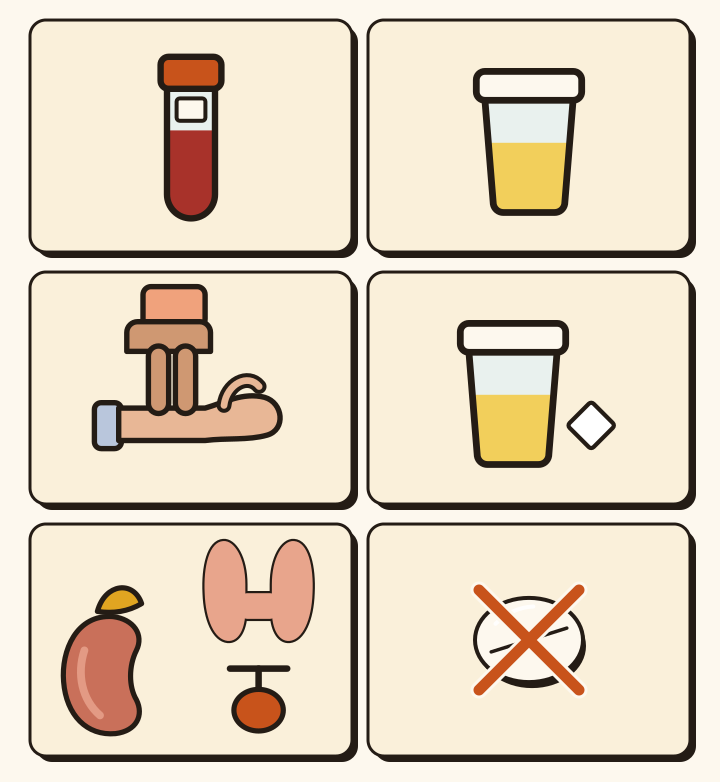
SIADH: the syndrome of inappropriate antidiuretic hormone secretion. Tap each line.
- Supporting: a low urate (his was 0.15 mmol/L), and a sodium that does not correct with 0.9% saline (his went from 129 to 124 across a litre).
- The criteria require the glands to be excluded. Do not write SIADH until they are.
- The guidelines now write “SIAD”. It is the same thing.
Right lower zone
SIADH is not the end of the search. Something is switching the vasopressin on.
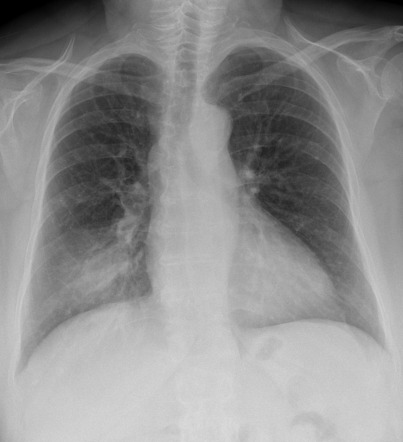
- Chest: pneumonia, abscess, tuberculosis.
- Brain: subarachnoid haemorrhage, meningitis, stroke.
- Cancer: small cell lung cancer, cancers of the gut.
- Drugs: antidepressants, antiseizure drugs, antipsychotics, opioids, and others.
- Illness itself: pain, nausea, stress, an operation.
- Dennis’s is on his chest film: consolidation in the right lower zone.
- No clear cause? A CT of the body and an MRI of the head may be arranged, to look for cancer.
Sodium 112 · GCS 8
He has fitted and his sodium is 112. What is the first treatment for the sodium?
- 3% saline, now. Severe symptoms mean a swelling brain, and the treatment is the same whatever the cause. Do not wait for the work-up.
- The symptoms earn it, not the number.
- UK guidance (Society for Endocrinology, 2022 update) gives the same pathway for moderately severe symptoms: nausea, confusion, headache. Those are common and non-specific, so that is a senior decision.
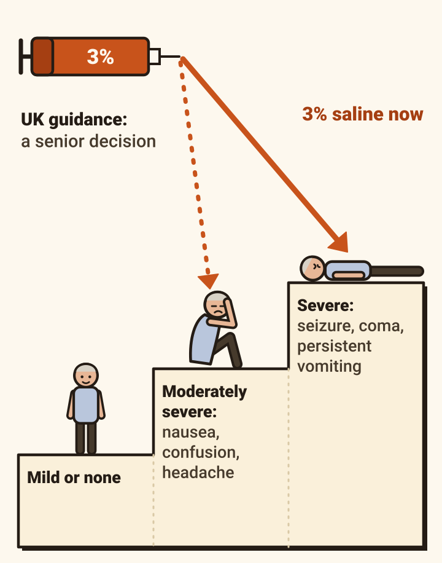
The first hour
150 mL of 3% saline over 20 minutes. Check. Repeat. Stop at plus 5.
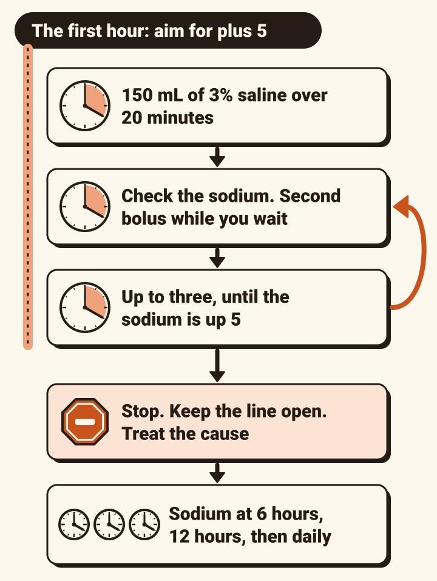
- 150 mL of 3% saline into a vein over 20 minutes.
- Check the sodium. Start a second 150 mL while you wait for the result.
- Up to three boluses, stopping once the sodium is 5 mmol/L higher. That is the first hour’s target.
- Then stop. Keep the line open with as little 0.9% saline as you can, and treat the cause.
- Sodium again at 6 hours, at 12 hours, then daily.
- Up 5 and no better? One further bolus, and look for another cause.
- A senior decision, somewhere he can be watched closely. Boluses, not a drip, and no formula to work out the dose.
- Follow the sodium on one machine, the gas analyser or the laboratory. Watch harder if one of the first two boluses lifts it by more than 5, or a third is needed.
- UK and European guidance give the same regimen. Most of it is graded low-quality evidence.
112 · the first 24 hours
Ten in the first day, eight in each day after. These are limits, not targets.
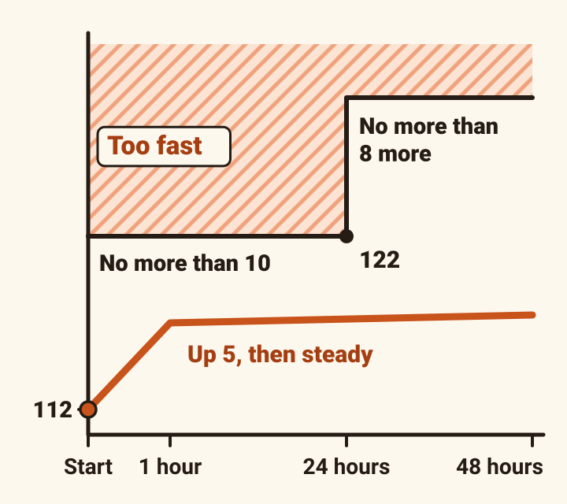
- No more than 10 mmol/L in the first 24 hours.
- No more than 8 mmol/L in each 24 hours after, until the sodium reaches 130.
- The aim is smaller: up 5, then steady. Do not aim for normal.
- For Dennis: no higher than 122 by Monday afternoon.
- Neither the UK nor the European guideline sets a lower limit for high-risk patients. Many units aim lower.
Alcohol · malnutrition · potassium 3.3
Osmotic demyelination arrives days later, and may not reverse.
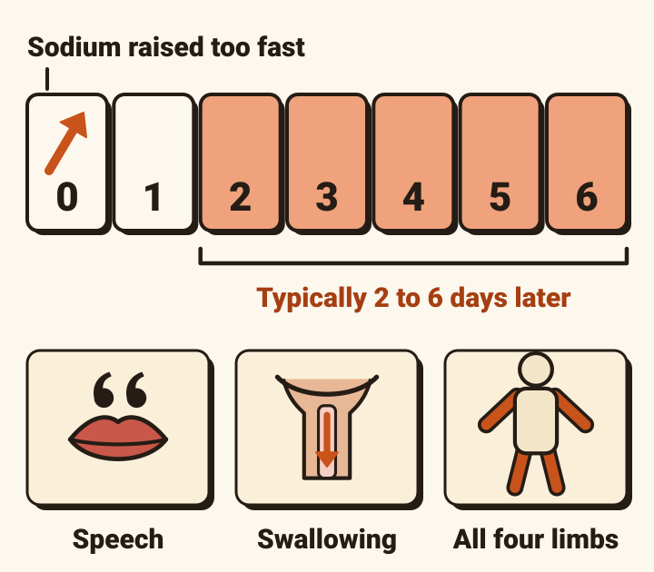
- It follows chronic hyponatraemia corrected too fast, typically 2 to 6 days later.
- Slurred speech, difficulty swallowing, weakness of all four limbs, confusion, coma. It can kill.
- More likely with: alcohol misuse, malnutrition, advanced liver disease, a low potassium, thiazides or antidepressants, and a sodium that is lower for longer.
- Dennis has three: alcohol, malnutrition, and a potassium of 3.3.
Sunday night
The dangerous hours come after the cause is treated.
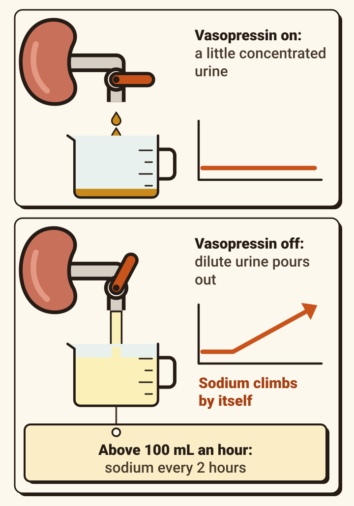
- Once the cause goes, vasopressin switches off. The kidney pours out dilute urine and the sodium climbs by itself.
- It can happen with no hypertonic saline at all.
- The warning is the urine. European advice: an output suddenly above 100 mL an hour means a sodium every 2 hours.
- Overshooting is common: 44.9% at 24 hours in a UK series from 2022 (48 of 107 patients), with no case of demyelination.
- Do not stop measuring because he looks better.
Suppose: Monday 06:00 · sodium 123
Up 11 in 14 hours, and he is passing a lot of dilute urine. What now?
- Stop, and ring. He is past 10 in 24 hours.
- UK guidance: stop the hypertonic saline and consult a clinician experienced in over-correction, who may use hypotonic fluid, with or without desmopressin, to bring the sodium back. It gives no doses.
- The figures are the European guideline’s, to agree with that expert: 10 mL/kg of electrolyte-free water (glucose solution, for example) over an hour, and desmopressin 2 micrograms into a vein, no more often than 8-hourly.
- The evidence for this is graded very low.
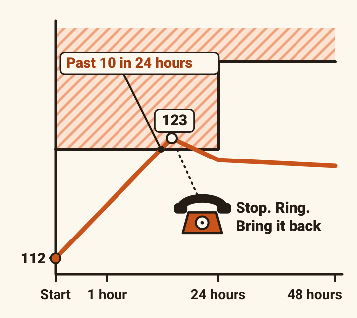
Tuesday 127 · Friday 134
Then treat the box he is in. For SIADH: restrict fluid, and treat the driver.
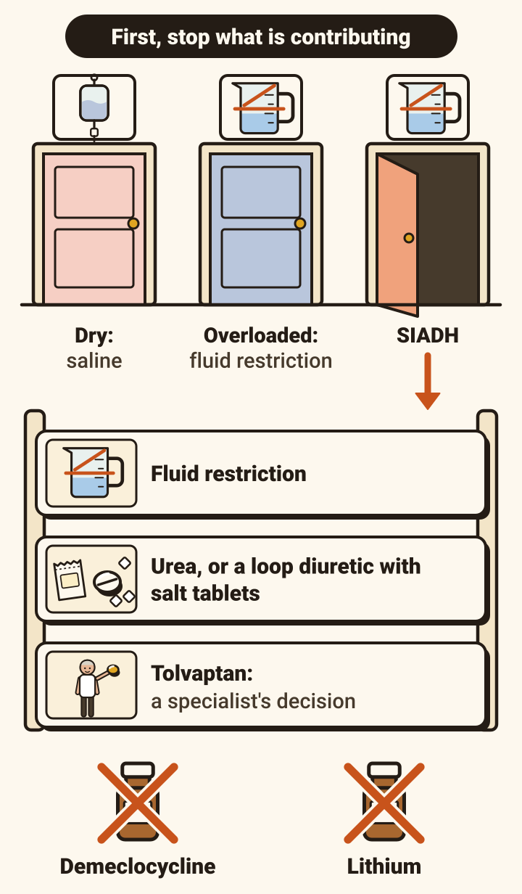
- Everyone: stop the fluids and drugs that are contributing.
- Dry: 0.9% saline at 0.5 to 1.0 mL/kg an hour. These patients overshoot too.
- Overloaded: fluid restriction.
- SIADH, first: fluid restriction. The European guideline names no volume.
- SIADH, second: urea, or a loop diuretic with salt tablets. Not demeclocycline or lithium.
- Tolvaptan: not in the emergency. The 2014 European guideline recommends against it; NICE’s Clinical Knowledge Summary (2025) says a specialist may use it for SIADH.
- Dennis: 127 on Tuesday on fluid restriction, 134 on Friday, and home.
Friday to Sunday · glucose 5%, a litre every 8 hours
The drip was a prescription. The result that should have stopped it went unread.
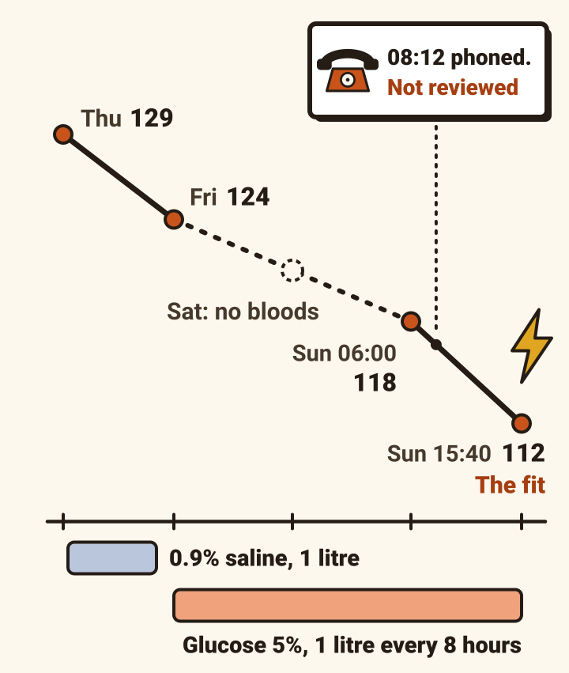
- Thursday: sodium 129, labelled “?dehydrated”. A litre of 0.9% saline. Friday: 124.
- Friday’s ward round: “encourage oral fluids, continue IVI. Repeat U&E Mon.” Then glucose 5%, three litres a day. Saturday: no bloods.
- Sunday 06:00: 118. The laboratory phoned it through at 08:12. Nobody reviewed it. He fitted at about 15:40.
- Illness had his vasopressin on. UK guidance lists inappropriate IV fluid among the causes of hyponatraemia.
- NICE: maintenance is 25 to 30 mL/kg a day, with sodium in it. More than 2.5 litres a day raises the risk of hyponatraemia. Review the fluid and the blood results every day.
One card to keep
The whole approach to a low sodium, on one card.
- The symptoms decide the first hour. The laboratory finds the cause. The cause decides the rest.
- Everything on it is on the cards before this one.
![A low sodium: the whole approach, in five steps. 1 Assess. How low? Below 125 is profound. How long? 48 hours or more, or unknown, is chronic. How symptomatic? 2 Act on the symptoms. Severe (seizure, coma, persistent vomiting) or moderately severe (nausea, confusion, headache, a senior decision): 150 mL of 3% saline over 20 minutes, up to three, stop at plus 5. Mild or none: there is time, find the cause first. 3 Investigate. Serum osmolality: below 275, it is real. Urine osmolality: above 100, vasopressin is on. Urine sodium: 30 or below, or above 30. Diuretic or kidney disease? The bedside, last: dry, normal or overloaded. Exclude the glands before you write SIADH. 4 Why, and 5 Treat it. Urine osmolality 100 or below, too much water for the solute: stop what is contributing. Dry (diarrhoea, vomiting, diuretics, adrenal insufficiency): 0.9% saline, 0.5 to 1.0 mL/kg an hour. Overloaded (heart failure, cirrhosis, nephrotic syndrome): fluid restriction. Normal volume, SIADH: fluid restriction, treat the driver. In every box: check the drugs and the drip. Beside it all, from step 2 down: no more than 10 in the first 24 hours, then 8 a day. Past it? Stop, and ring.](fit-debrief-d17-whole-approach.svg)
Sunday 15:40, one last time
A pneumonia switched his vasopressin on. A drip supplied the water. A result went unread.
Take home
- Hyponatraemia is a water problem. Ask how low, how long, how symptomatic.
- Severe symptoms: 150 mL of 3% saline over 20 minutes, repeated until the sodium is up 5. Before the work-up.
- Never more than 10 in the first 24 hours. Keep measuring overnight.
- Osmolalities and urine sodium first, the bedside last. SIADH only once the glands and diuretics are excluded.
- IV fluid is a prescription. Review it, and the sodium, every day.
Where this comes from.
Emergency treatment
- Ball S, Barth J, Levy M, and the Society for Endocrinology Clinical Committee. Emergency management of severe and moderately severely symptomatic hyponatraemia in adult patients. Society for Endocrinology emergency guidance, 2022 update.
Diagnosis and the rest
- Spasovski G, et al. Clinical practice guideline on diagnosis and treatment of hyponatraemia. European Journal of Endocrinology 2014;170(3):G1–G47. doi:10.1530/EJE-13-1020. Its recommendations were checked in the guideline group’s condensed version: BANTAO Journal 2014;12(2):65–74. doi:10.2478/bj-2014-0014
Causes
- NICE Clinical Knowledge Summary. Hyponatraemia (revised October 2025). cks.nice.org.uk/topics/hyponatraemia
Fluids
- NICE. Intravenous fluid therapy in adults in hospital (CG174; 2013, updated 2017). nice.org.uk/guidance/cg174
Also
- Arshad MF, et al. Hypertonic saline for severe symptomatic hyponatraemia: real-world findings from the UK. Endocrine Connections 2022;11(5):e220007. doi:10.1530/EC-22-0007
- NHS Greater Glasgow and Clyde. Flowchart 1: Investigation of hyponatraemia in adults. An example of a local flowchart.
Guidelines change. Checked October 2026.